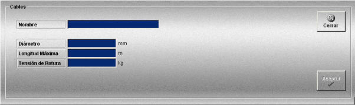

Cables
La creación y edición de cables se realiza mediante la siguiente ventana.

Esta ventana permite definir los cables que podrán ser añadidos a los artes de arrastre definidos.
Se definen los siguientes datos:
Nombre: Nombre del cable.
Formato: caracteres alfanuméricos.
Diámetro: Diámetro del cable.
Unidades: milímetros
Rango: 0.00- 300.00
Longitud Máxima: Longitud máxima de cable que se puede largar.
Unidades: metros
Rango: 0.00- 60.00
Tensión de Rotura: Tensión máxima que soporta el cable, si esta tensión se supera el cable se rompe.
Unidades: kilogramos
Rango: 0.00- 300.00